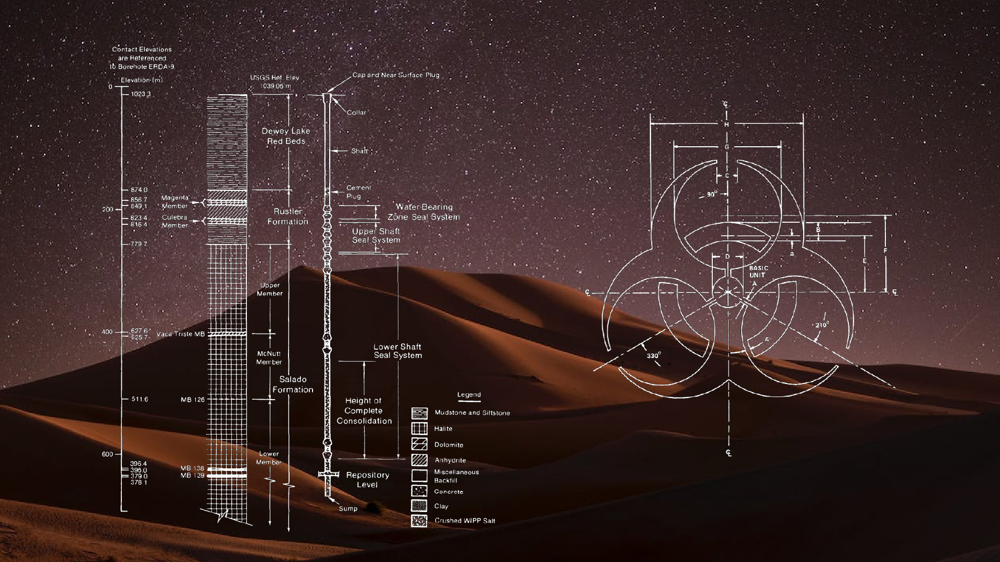
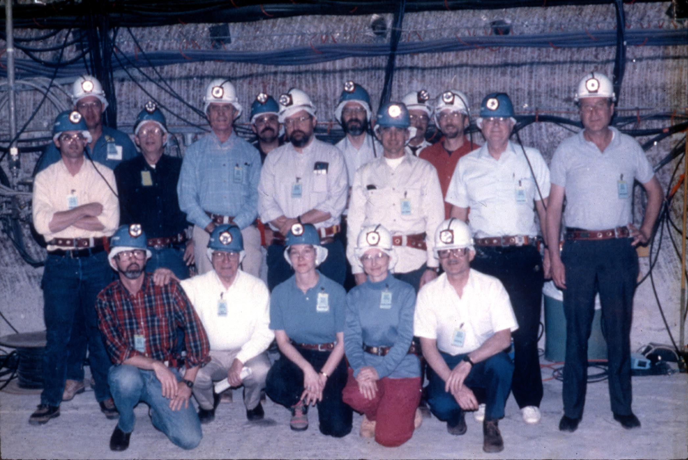
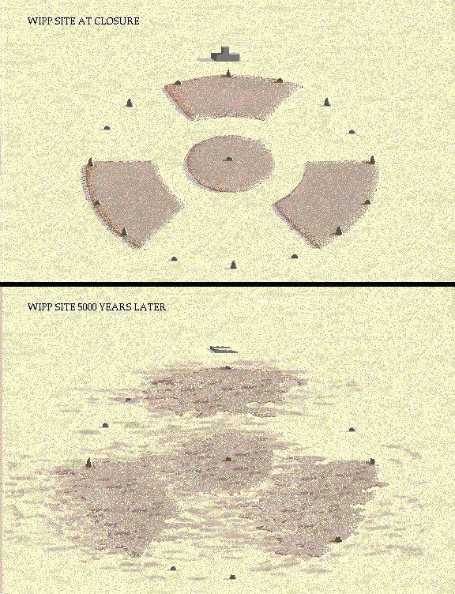
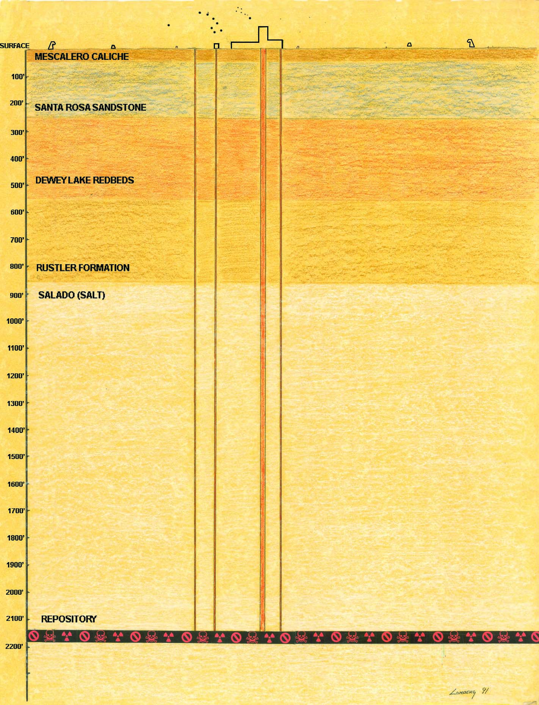

Designing Nuclear Waste Warnings to Last 10,000 Years
This article was first published in Nightingale on March 8, 2023.
About 10,000 years ago, the Earth was in the midst of the last Ice Age, and much of the northern hemisphere was covered in ice sheets. Sea levels were lower, and the landscape was dotted with glaciers. In areas not covered in ice, the climate was cooler and drier. Forests and grasslands dominated the landscape, and human civilizations were just beginning to develop.
Now, the year is 12,023. Long gone are the generations who pioneered and attempted to archive information. Long gone are those who understood the importance of history and its significance on building what is now considered present day society. A human approaches a sparse, unmanned area in the desert of what once used to be New Mexico, United States. Large chunks of stone debris are scattered in the sand and there is no one to be found. Engraved on one stone is an earlier form of English along with a pictograph. The human doesn’t understand everything the stone says, but can make out something which frightens them—a warning, or possible threat, of death. With this now in mind, the human hastily passes the area with a mental note to never return, for no good can come from doing so.
What the human didn’t know is roughly 2,150 feet (657 meters) below this stone is nuclear waste deposited 500 generations ago; the warning marker continuing the job it was assigned to do 10,000 years prior.
A high-stakes design project
This is not a hypothetical conceptualized for science fiction, but a scenario real experts have considered at the Waste Isolation Pilot Plant (WIPP) near Carlsbad, New Mexico. The WIPP is a housing location for the United States’ nuclear waste, including clothing, tools, rags, residues, debris, soil, and other items contaminated with small amounts of plutonium and other man-made radioactive elements. The warning markers for this plant are not currently active, because there is no need to deter people from the area if the site is occupied with a staff. But once the plant decides to close its doors, with the nuclear waste still remaining, proper signage will be critical.
Nearly 30 years ago, teams of anthropologists, archaeologists, architects, astronomers, communicators, designers, engineers, geologists, linguists, material scientists, psychologists, semioticians, and sociologists convened to conceptually design warning markers to physically withstand 10,000 years. Their goal was to come up with a proactive proposal to ensure outsiders would never enter a location housing the country’s nuclear waste, even centuries after the plant ceased operations. It is a once-in-a-lifetime challenge for an information designer—and a story not often shared, though should be.
One of the teams consulting for the WIPP. Credit: Jon Lomberg
I had the privilege of sitting down with Jon Lomberg to get a better idea of his role as a designer for this project. Lomberg has held many titles throughout his career, including NASA’s Design Director for the Golden Record on the Voyager Spacecraft and Carl Sagan’s principal artistic collaborator. His work for the WIPP was designed to help clearly communicate to the public the science behind the project and its potential benefits and risks. Lomberg’s role at the WIPP involved working with his multidisciplinary team to understand the technical aspects of the project and to translate this information into visual form.
“It was a thought experiment, but we tried to approach it seriously,” Lomberg said. “One thing we were told was that there were no budgetary restraints. We could design what we want and not worry about building permits or construction costs.”
Considering every scenario
It’s not often data visualization artists or information designers are granted a blank check with no restraints, so where does one’s mind go when all barriers are removed? The group briefly considered making the danger markers from solid gold because of the metal’s stability and durability—it doesn’t corrode or tarnish— but the risk of theft was too high to entertain the idea for very long.
A mock up of materials simulated to see how they would look after 5,000 years, half way through the projected timeline. Credit: Jon Lomberg
While developing their proposal, the team followed two guiding stars. The first focused on how we interpret narrative. “Most narratives are read from left to right, but […] that is something which is learned,” Lomberg explains. “However, everyone, seemingly by nature, reads from top to bottom.”
The second guiding star was how the narrative is visualized. Icons which require teaching to understand their meaning and significance, like the biohazard icon or alphabets, may lack staying power. This posed a challenge in deciding which symbols or icons could work.
“Humans inherently like and understand pictorial narratives,” Lomberg told me. This led to options which included the classic stick figure, which can be traced back to prehistoric cave paintings, being a viable option, though not without concern when considering its place in a narrative and how humans read it. The stick figure, notes Lomberg, “is something everybody recognizes as the human shape, by nature.”
In addition to working without budgetary restraints, the teams relied on two additional pieces of information to develop their proposal. The first was to assume the people who may stumble upon the site have the same cognitive reasoning as humans do today. The second was to consider 10,000 years as an arbitrary goalpost. The radioactive materials will still be radioactive after 10,000 years, so this benchmark simply offered them an initial bar to reach.
The group also eliminated a few other ideas, including anything non-structural. This included concepts such as a warning sound echoing throughout the area. But they considered structural concepts—including a few controversial ones which made it into the completed proposal—such as modifying the physical landscape, lining the desert fields with large stone spikes, and attempting to convey dread or danger in a way which didn’t require language or pictographs.
An ongoing debate for the ages
The biggest concern with these ideas was whether people would accurately interpret the messages as intended (with a sense of dread or danger), or would find them intriguing—stirring their desire to explore and triggering the adverse effect.
“I didn’t want the design to be mistaken as an art project,” Lomberg said. “I look at things like signs in national parks. You see information signs overlooking great landscapes, and you never think that the sign is lying to you. It’s there to do a job and no one misinterprets it.”
Designing these markers meant examining multiple options for their physical shape, as well. Laying out a number of above-ground markers in a circle, giving shape to the location, seemed viable, and was another option which made it into the proposal. Such markers would contain pictographs and possibly danger warnings in multiple languages.
They also considered a below ground alternative; layering the area with buried platforms at various depths. This may deter people from digging; afterall, the danger is hidden until brought to the surface.
A depth visualization of the various geologic materials on top of the WIPP. At 2,200 feet is the repository. Credit: Jon Lomberg
Ultimately, the proposal conceptualized by minds like Jon Lomberg remains just that—a proposal. While there is no need for such warning markers to exist while the WIPP is still operational, it’s possible the coming decades will see their implementation. Until then, we can allow our minds to wonder about the human who will stumble upon this location in the year 12,023. And after that point, says Lomberg, “we simply have to say, it’s somebody else’s problem.”